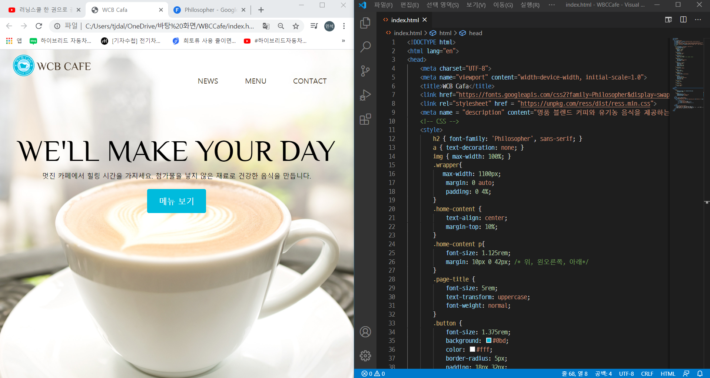
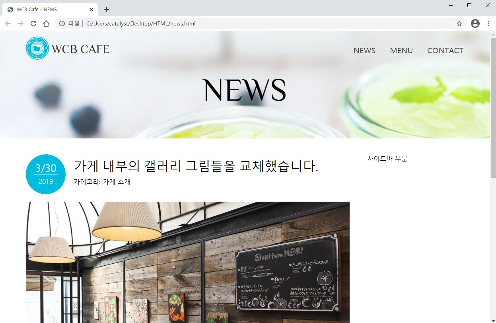

3주차 ~ 4주차 CSS 배우기
HTML에 익숙해진 이후에 다소 밋밋하던 저희의 웹페이지를 보기좋게 꾸며줄 CSS에 대해 공부했습니다.
CSS란 Cascading Style Sheets의 약자로 기존의 HTML은 웹 문서를 다양하게 설계하고 수시로 변경하는데 많은 제약이 따릅니다. 이를 보완하기 위해 만들어진 것이 스타일 시트이고
스타일 시트의 표준안이 바로 CSS입니다. CSS가 생겨난 덕에 HTML을 이용해 웹 페이지를 제작할 때 세세한 부분을 하나 하나 일일이 지정해줄 필요없이
스타일 시트의 한 요소만 변경해도 관련된 문서 전체가 바뀌기 때문에 일관성 유지 및 작업 시간도 단축됩니다.
CSS의 입문으로 개발자 Egoing님의 유튜브 영상으로 기초를 다졌고 개발자 윤인성님의 웹 디자인 입문 영상으로 실습을 겸하며 스터디를 진행했습니다.
--> Egoing 생활코딩 CSS 영상 <--
--> 유니코딩 윤인성 웹 디자인 입문 영상<--
박스형태의 기본이 되는 border, margin, padding을 배우고, 세로로된 리스트의 형태를 가로로 바꾸어주는 flex 레이아웃, 마우스에 반응하는 hover 등 여러가지 디자인적 요소를 배울 수 있었습니다.
 